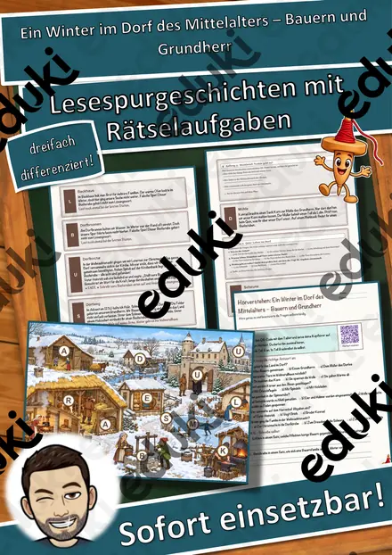
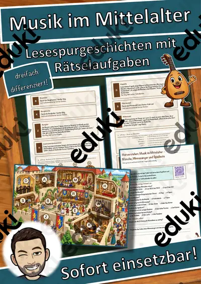
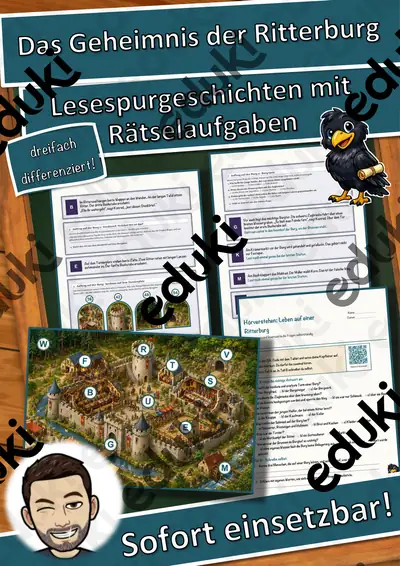
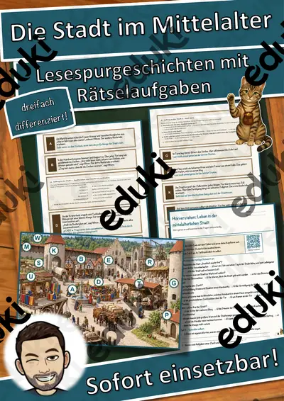
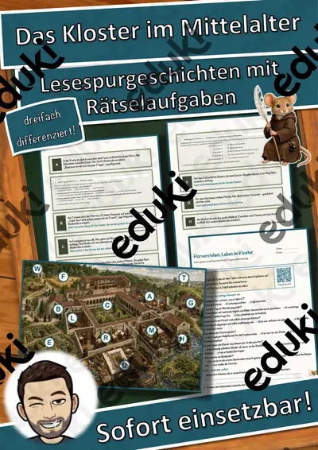
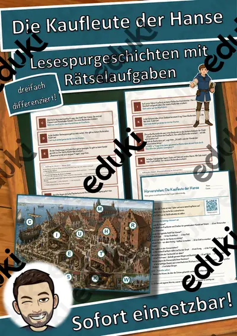
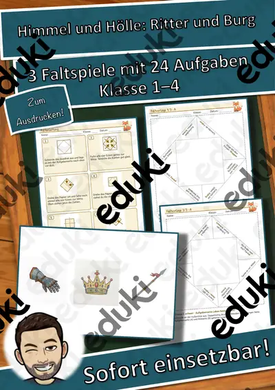
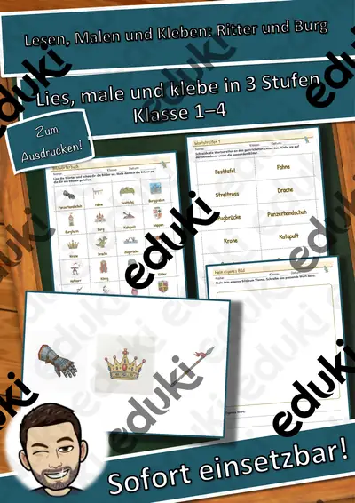

Mittelalter, Ritter und Burgen: Arbeitsblätter für Klasse 4–8 (Geschichte)
Das Mittelalter bietet viele Anknüpfungspunkte: Ritter und Burgen, Dörfer und Städte, Kloster und Kirche. In der Sekundarstufe I steht die Ständegesellschaft im Mittelpunkt.
Im Unterricht begegnen den Lernenden zuerst Ständeordnung und Ritter. Wer weitergeht, behandelt Burg, Kloster, Stadt und Zünfte sowie Pest.
Je nach Bundesland variiert die genaue Einordnung; üblich ist das Fach Geschichte in den Klassen 4 bis 8. Die Schülerinnen und Schüler beschreiben die Ständegesellschaft und vergleichen Leben in Burg, Dorf und Stadt.
Ob Vertretungsstunde, Stationenarbeit oder Hausaufgabe: Die Arbeitsblätter zu Mittelalter, Ritter und Burgen lassen sich flexibel einsetzen, etwa mit Ständeordnung als Auftakt und Pest als Abschluss. Musterlösungen sparen die Korrekturzeit. Zur Differenzierung eignen sich die Lesespurgeschichten mit ihren drei Niveaustufen.
Zum Thema finden Sie 21 Materialien, unter anderem Memory: Ritter und Burg, Domino: Ritter und Burg und Sprechanlässe: Ritter und Burg, verteilt auf 7 Lesespurgeschichten und 8 Lückentexte mit Hörverstehen in Klasse 3–7. Eine Ständepyramide, die die Klasse selbst befüllt, zeigt Machtverhältnisse in einem Blick.
Das gehört zum Thema
Passende Arbeitsblätter und Materialpakete

Ein Winter im Dorf des Mittelalters – Bauern und Grundherr – Lesespurgeschichte mit Rätselaufgaben (Klasse 7)

Musik im Mittelalter – Mönche, Minnesänger und Spielleute – Lesespurgeschichte mit Rätselaufgaben (Klasse 7)

Das Handwerk und die Zünfte – Lesespurgeschichte mit Rätselaufgaben (Klasse 7)

Das Geheimnis der Ritterburg – Lesespurgeschichte mit Rätselaufgaben (Klasse 6)

Die Stadt im Mittelalter – Lesespurgeschichte mit Rätselaufgaben (Klasse 6)

Das Kloster im Mittelalter – Lesespurgeschichte mit Rätselaufgaben (Klasse 6)

Die Kaufleute der Hanse – Lesespurgeschichte mit Rätselaufgaben (Klasse 7)

Pest Lückentext mit Wortspeicher Hörverstehen und Suchsel

Ritter Lückentext mit Wortspeicher Hörverstehen und Suchsel

Burg Lückentext mit Wortspeicher Hörverstehen und Suchsel

Mittelalter Lückentext mit Wortspeicher Hörverstehen und Suchsel

Kreuzzug Lückentext mit Wortspeicher Hörverstehen und Suchsel

Kloster Lückentext mit Wortspeicher Hörverstehen und Suchsel

Karl der Große Lückentext mit Wortspeicher Hörverstehen und Suchsel

Hanse Lückentext mit Wortspeicher Hörverstehen und Suchsel

Memory: Ritter und Burg – Bild-Wort-Spiele – Klasse 1–4

Domino: Ritter und Burg – Bild-Wort-Spiele – Klasse 1–4

Sprechanlässe: Ritter und Burg – Sprechanlässe – Klasse 1–4

Himmel und Hölle: Ritter und Burg – Himmel und Hölle – Klasse 1–4

Klammerkarten: Ritter und Burg – Klammerkarten – Klasse 1–4

Lesen, Malen und Kleben: Ritter und Burg – Lesen und Malen – Klasse 1–4
Häufige Fragen
Für welche Klassenstufe passen die Arbeitsblätter zu Mittelalter, Ritter und Burgen?
Passend sind Klasse 3–7. Von den 21 Titeln wenden sich die meisten an Klasse 6, einige lassen sich differenzierend auch in benachbarten Stufen nutzen.
Welche Inhalte decken die Materialien zu Mittelalter, Ritter und Burgen ab?
Behandelt werden unter anderem Ständeordnung, Ritter, Burg und Kloster. Welche Aspekte in Ihrer Klasse Vorrang haben, richtet sich nach dem Lehrplan Ihres Bundeslandes.
Wie setze ich Mittelalter, Ritter und Burgen im Unterricht ein?
Eine Ständepyramide, die die Klasse selbst befüllt, zeigt Machtverhältnisse in einem Blick. So entsteht aus den Blättern eine kleine Einheit, die sich auf zwei bis drei Stunden verteilen lässt.
Mehr Material nach Fach und Klasse
- Alle Materialien Deutsch
- Arbeitsblätter Deutsch Klasse 4
- Arbeitsblätter Deutsch Klasse 5
- Arbeitsblätter Deutsch Klasse 6
- Arbeitsblätter Deutsch Klasse 7
- Arbeitsblätter Deutsch Klasse 8
- Unterrichtsmaterial Klasse 4
- Unterrichtsmaterial Klasse 5
- Unterrichtsmaterial Klasse 6
- Unterrichtsmaterial Klasse 7
- Unterrichtsmaterial Klasse 8
Verwandte Lehrplanthemen
- Das alte Ägypten (Geschichte, Klasse 4–7)
- Antikes Griechenland (Geschichte, Klasse 5–7)
- Römisches Reich (Geschichte, Klasse 5–7)
- Steinzeit (Geschichte, Klasse 3–6)
- Französische Revolution und Aufklärung (Geschichte, Klasse 8–10)